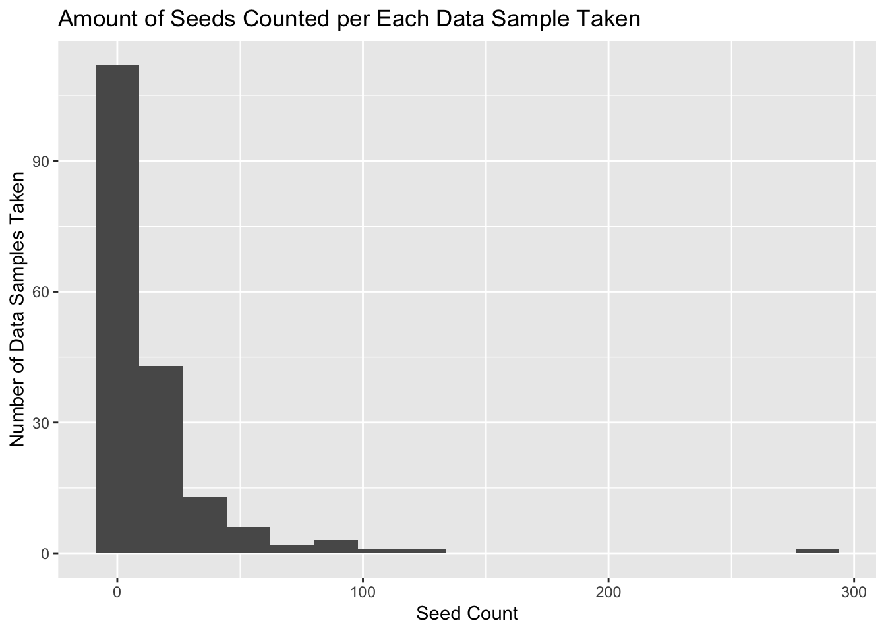
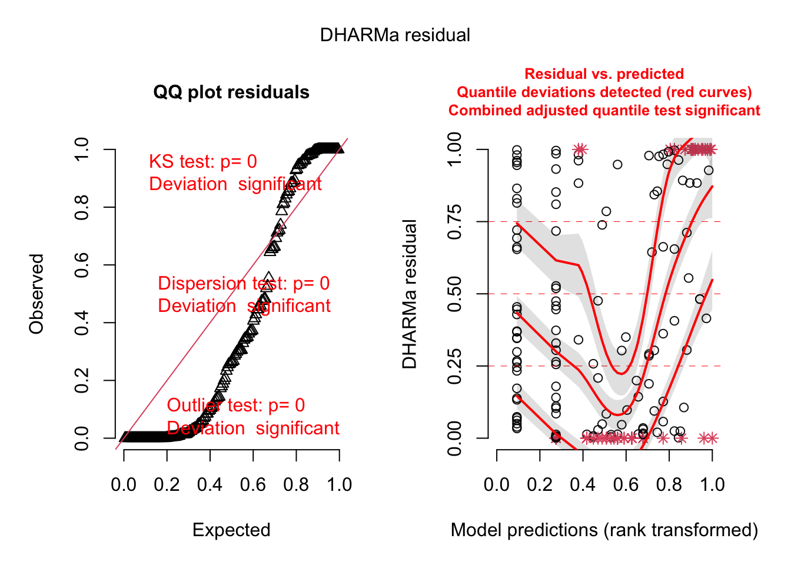
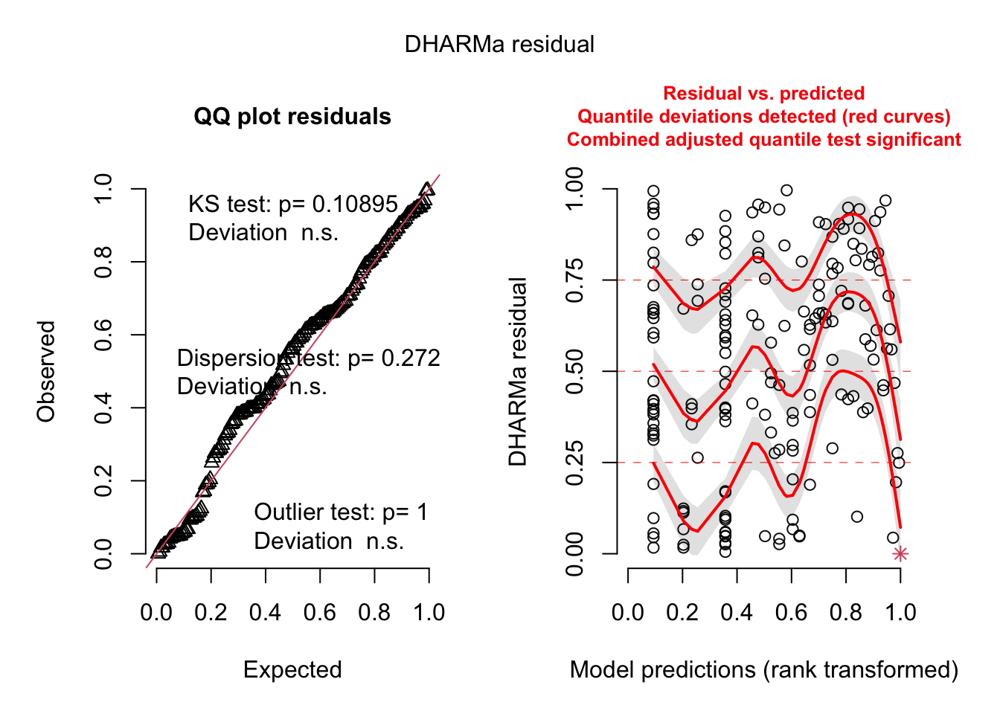
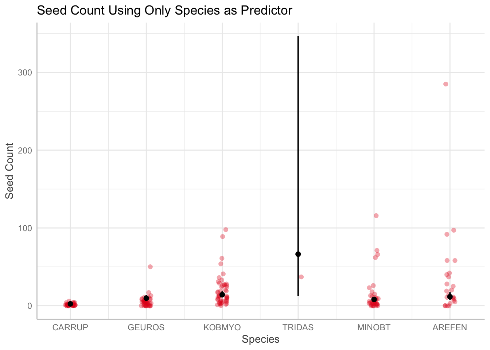
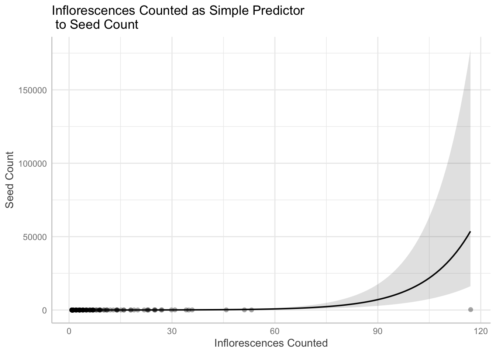
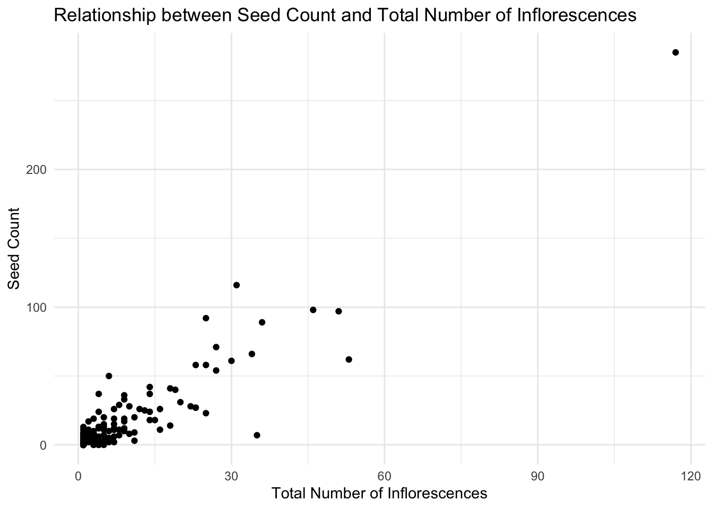

In the realm of biological research, understanding the factors that influence seed count is of great significance as it sheds light on the reproductive success and fitness of plant species. In the alpine tundra, results of climate change have included ‘shrubification’- an increase in woody shrubs, which affects on the vegetative community are in need of inspection(Mod & Luoto, 2016). This analysis aims to investigate how seed count varies in relation to three key variables: plot type (shrub or open), plant species, and the total number of inflorescences, and to see if a simpler model explaining seed count can be derived. Previous studies have shown shrubs to increase seed bank count in desert areas and that different plant species display varying seed production patterns, where trade-offs may occur between larger seed mass and seed count, which are interesting points to compare to the alpine tundra environment we studied(Filazzola et. al., 2019; Paul-Victor & Turnbull, 2009). Our null hypothesis is that none of the variables observed, plot type, species, nor number of inflorescences, will have an effect on seed count, and our alternative hypothesis is that at least one of these variables will have a correlation with seed count.
Methods
Code
library(MASS) # have to read this in before tidyverse # should haveslibrary(tidyverse)library(here)library(janitor)library(ggeffects)library(performance)library(naniar)library(skimr)library(flextable)library(car)library(broom)library(corrplot)library(AICcmodavg)library(GGally)# would be nice to havelibrary(MuMIn)library(DHARMa)#library(equatiomatic)library(corrplot)library(lme4)library(glmmTMB)
Code
seed_count <-read_csv(here("data", "shrubstudy_seed_ctwt.ms.data.csv")) %>%# make the column names cleanerclean_names() %>%select(treatment, species, total_nr_infl, nr_infl_coll, nr_seeds)
Code
ggplot(seed_count, aes(x = nr_seeds)) +geom_histogram(bins =17)+labs(x ="Seed Count", y ="Number of Data Samples Taken", title ="Amount of Seeds Counted per Each Data Sample Taken", hjust =0.5)

Figure 1. Seed Count per Data Sample visualization. Histogram displaying how many seeds were counted at each data sample. The x axis is the seed count and the y axis is amounted of data samples collected per each seed count. Right-skewed distribution is observed, indicating many samples had little to no seeds, with some outliers of data samples having very high seed counts.
Checking Missing Data:
Code
gg_miss_var(seed_count)
Figure 2. Visualizing Missing Data. Checking visually the missing data and where it occurs. Seed count has the most missing data, with 106 samples missing. Inflorescence collected has 6 samples missing, and the rest of the data is not missing.
Code
# creating subset of data with only total collected data includedseed_subset <- seed_count %>%# dropping NA's from data setdrop_na(treatment, species, total_nr_infl, nr_infl_coll, nr_seeds)
Code
seed_subset %>%select(!species) %>%ggpairs()
Figure 3. Pairs Plot of Variables Relationships. Pairs plot used to display the individual relationships between variables and their correlation to each other. Potentially positive linear relationship appears between all of the variables, each with high correlation above 0.9.
Code
skim(seed_subset)
Data summary
Name
seed_subset
Number of rows
182
Number of columns
5
_______________________
Column type frequency:
character
2
numeric
3
________________________
Group variables
None
Variable type: character
skim_variable
n_missing
complete_rate
min
max
empty
n_unique
whitespace
treatment
0
1
5
7
0
2
0
species
0
1
6
6
0
6
0
Variable type: numeric
skim_variable
n_missing
complete_rate
mean
sd
p0
p25
p50
p75
p100
hist
total_nr_infl
0
1
7.15
12.56
1
1.00
2.5
7.00
117
▇▁▁▁▁
nr_infl_coll
0
1
7.15
12.56
1
1.00
2.5
7.00
117
▇▁▁▁▁
nr_seeds
0
1
14.55
28.62
0
1.25
5.0
13.75
285
▇▁▁▁▁
Building Models
Code
# linear model, we know this is wrongseedmod1 <-lm(nr_seeds ~ treatment + species + total_nr_infl, data = seed_subset)# generalized linear model with Poisson distributionseedmod2 <-glm(nr_seeds ~ treatment + species + total_nr_infl, data = seed_subset, family ="poisson")seedmod2.a <-glm(nr_seeds ~ treatment + species + total_nr_infl, data = seed_subset, family ="poisson")# generalized linear model with negative binomial distributionseedmod3 <-glm.nb(nr_seeds ~ treatment + species + total_nr_infl, data = seed_subset)seedmod3.a <-glmmTMB(nr_seeds ~ treatment + species + total_nr_infl, data = seed_subset, family ="nbinom2")# generalized linear model with Poisson distribution and random effect of siteseedmod4 <-glmer(nr_seeds ~ species + total_nr_infl + (1|treatment), data = seed_subset, family ="poisson")seedmod4.a <-glmmTMB(nr_seeds ~ species + total_nr_infl + (1|treatment), data = seed_subset, family ="poisson")# generalized linear model with negative binomial distribution and random effect of siteseedmod5 <-glmer.nb(nr_seeds ~ species + total_nr_infl + (1|treatment), data = seed_subset)seedmod5.a <-glmmTMB(nr_seeds ~ species + total_nr_infl + (1|treatment), data = seed_subset, family ="nbinom2")
Code
# check diagnosticsplot(simulateResiduals(seedmod1)) # bad
Figure 4. Assumptions Test of Model 1. Dharma test of residuals for model 1. Model appears bad due to extreme deviation.
Code
plot(simulateResiduals(seedmod2)) # bad
Figure 5. Assumptions Test of Model 2. Dharma test of residuals for model 2. Model appears bad due to extreme deviation.
Code
plot(simulateResiduals(seedmod3)) # ok?
Figure 6. Assumptions Test of Model 3. Dharma test of residuals for model 3. Model has fairly straight line in Q-Q plot suggesting potential normality.
Code
plot(simulateResiduals(seedmod4)) # bad

Figure 7. Assumptions Test of Model 4. Dharma test of residuals for model 4. Model appears bad due to extreme deviation.
Code
plot(simulateResiduals(seedmod5)) # bad/ok?

Figure 8. Assumptions Test of Model 5. Dharma test of residuals for model 5. Model appears okay, the data is nearing normality in Q-Q plot, but not best model prediction.
# Overall test of the model's significancenull_model <-glm.nb(nr_seeds ~1, data = seed_subset) # Null model with only interceptanova(seedmod3, null_model, test ="Chisq")
Likelihood ratio tests of Negative Binomial Models
Response: nr_seeds
Model theta Resid. df 2 x log-lik.
1 1 0.4697806 181 -1291.526
2 treatment + species + total_nr_infl 1.5049302 174 -1112.910
Test df LR stat. Pr(Chi)
1
2 1 vs 2 7 178.6161 0
Code
plot(ggpredict(seedmod3, terms ="treatment", back.transform =TRUE), add.data =TRUE) +labs(title ="Seed Count Using Only Treatment as Predictor:\n Shrub vs Open(control)", x ="Treatment Type", y ="Seed Count", hjust =0.5)
Figure 9. Treatment as Simple Model for Seed Count. Visually assessing using a simple model of only treatment type predictor of seed count. Overall, both shrub and control(open) are more clustered towards lower seed counts, but open appears to be a little more evenly spread in having higher seed counts.
Code
plot(ggpredict(seedmod3, terms ="species", back.transform =TRUE), add.data =TRUE)+labs(title ="Seed Count Using Only Species as Predictor", x ="Species", y ="Seed Count")

Figure 10. Species as Simple Model for Seed Count. Visually assessing using simple model of just species as predictor to seed count. Species appears to have large effect on seed count with high variabilty shown amongst different species.
Code
plot(ggpredict(seedmod3, terms ="total_nr_infl", back.transform =TRUE), add.data =TRUE)+labs(title ="Inflorescences Counted as Simple Predictor\n to Seed Count", x ="Inflorescences Counted", y ="Seed Count")

Figure 11. Inflorescence as Simple Model for Seed Count. Visually assessing using simple model of just inflorescence counted as predictor to seed count. Exponential relationship is displayed, with increased inflorescence count having a drastic effect on seed count.
Code
# create models with only one variable as the predictor to test if a simpler model will accurately predict seed countseedmod_treatment <-lm(nr_seeds ~ treatment, data = seed_subset)seedmod_species <-lm(nr_seeds ~ species, data = seed_subset)seedmod_total_nr_infl <-lm(nr_seeds ~ total_nr_infl, data = seed_subset)
The results of doing a Chi Square test on the seedmod3 model (created with generalized linear model with negative binomial distribution) it was found that the seedmod3 was the best model of the five that were tested as the Chi-square value using a significance value of 0.05 for the seedmod3 was 178.6161 as seen in the ANOVA table. The degrees of freedom were 181 for the null model and 174 for the full model, the p-value for the full model was indicated to be <0.001 in the ANOVA table.
Then, based on seedmod3, simpler models were tested with predictors of only one of the variables instead of the full model (seedmod3) like seedmod_treatment. Comparing these models showed that the best fit model to the data based on the lowest AICc value was the seedmod3. The AICc value for the simple models (total_nr_infl = 1295.6, species = 1722.1, treatment = 1741.6) were all larger than the seedmod3’s AICc value (1132.0). This showed that there was no simpler model for this data frame to predict the seed count based on the AICc values.
Visualization
Code
# create a ggplot with species and treatment as predictors of seed countggplot(data = seedmod3, aes(x = species, y = nr_seeds, fill = treatment)) +geom_boxplot(position =position_dodge(width =0.8), color ="black") +labs(x ="Species", y ="Seed Count", title ="Distribution of Seed Count by Species and Treatment") +theme_minimal()
Figure 12. Distribution of Seed Count by Species and Treatment. Boxplot showing the distribution of seed count by species and treatment. The x-axis represents different species, the y-axis represents seed count, and the fill color represents treatment (shrub or open).
Code
# show the relationship of total.nr.infl and seedsggplot(data = seedmod3, aes(x = total_nr_infl, y = nr_seeds)) +geom_point() +labs(x ="Total Number of Inflorescences", y ="Seed Count", title ="Relationship between Seed Count and Total Number of Inflorescences") +theme_minimal()

Figure 13. Relationship between Seed Count and Total Number of Inflorescence. Scatter plot depicting the relationship between seed count and the total number of inflorescence. The x-axis represents the total number of inflorescence, and the y-axis represents seed count.
Code
table <-tidy(seedmod3, conf.int =TRUE) %>%# change the p-value numbers if they're really small using mutate# change the estimates, st err, and t-stats to round to ___ digitsmutate(p.value =round(p.value, digits =4),estimate =round(estimate, digits =4),std.error =round(std.error, digits =4)) %>%# make it into a flextableflextable() %>%# fit it to the viewerautofit()table
term
estimate
std.error
statistic
p.value
conf.low
conf.high
(Intercept)
1.9176
0.2221
8.6325103
0.0000
1.48135091
2.37173652
treatmentshrub
-0.3474
0.1443
-2.4072915
0.0161
-0.62574220
-0.06685413
speciesCARRUP
-1.5676
0.2937
-5.3371906
0.0000
-2.15660520
-0.98976040
speciesGEUROS
-0.1785
0.2524
-0.7072255
0.4794
-0.68625088
0.32088265
speciesKOBMYO
0.1984
0.2237
0.8870082
0.3751
-0.24125179
0.62418151
speciesMINOBT
-0.3623
0.2376
-1.5250592
0.1272
-0.82158807
0.08813708
speciesTRIDAS
1.7408
0.8571
2.0309515
0.0423
0.34320597
3.95113117
total_nr_infl
0.0750
0.0056
13.4160983
0.0000
0.05879443
0.09257054
Table 1. Statistical results for variables as predictor of seed count. The table summarizes the statistical results for the predictors in the model. “treatmentshrub” has a significant negative effect (p = 0.016), while “speciesCARRUP” and “total_nr_infl” have significant positive effects (p < 0.001). “speciesTRIDAS” also has a significant positive effect (p = 0.042). Other predictors do not show significant effects. The table provides key information on the relationships between predictors and seed count
Interpretation of Results
These results indicated that seed count is significantly affected by plot type, species, and number of inflorescence. When these three variables are at play together, we are most able to predict seed type. Open plots were associated with more seed counts than shrub plots, as well as species Carrup and Tridas had much higher seed counts than other species. Total number of inflorescence also had a positive relationship with seed count, increasing mutually. Our results allow us to reject our null hypothesis that none of the variables would affect seed count, instead all had an impact. In an effort to see if any simpler models existed that could predict seed count, like only plot type, species, or number of inflorescence, but none of the models were better than the model that accounted for all the variables as the predictors. This tells us that all these variables should be accounted for in strategic planning for plant reproductive success, and that the ideal would be using an open plot, with either the Carrup or Tridas species, and having a higher number of inflorescence to have the highest seed count. The findings that shrub plots were less successful for seed counts may be cause for remedies to the ‘shrubification’ ocurring in the alpine tundra in order for overall plant community success to persevere.
Works Cited
Filazzola, A., Liczner, A. R., Westphal, M., & Lortie, C. J. (2019). Shrubs indirectly increase desert seedbanks through facilitation of the plant community. PloS one, 14(4), e0215988. https://doi.org/10.1371/journal.pone.0215988
Mod, H. K., & Luoto, M. (2016). Arctic shrubification mediates the impacts of warming climate on changes to tundra vegetation. Environmental Research Letters, 11(12). DOI 10.1088/1748-9326/11/12/124028
Paul-Victor, C., & Turnbull, L. A. (2009). The effect of growth conditions on the seed size/number trade-off. PloS one, 4(9), e6917. https://doi.org/10.1371/journal.pone.0006917